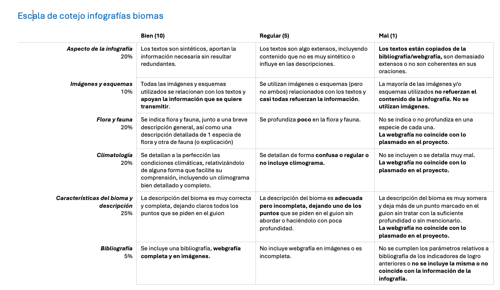
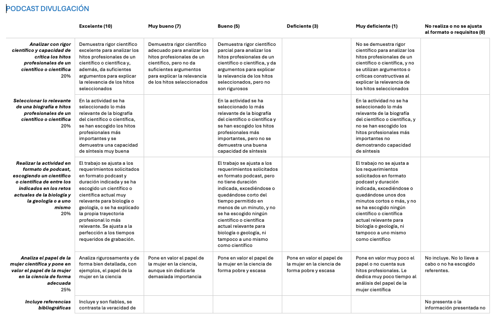

Evaluación
Se calificará el producto intermedio: infografía interactiva mediante una escala de cotejo (criterios 1.1, 1.2, 1.3, 2.1, 2.2) y el producto final: podcast de divulgación siguiendo la rúbrica de evaluación adjunta (criterios 2.1, 2.2, 5.1, 5.2, 5.3)

